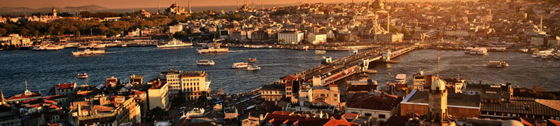

İstanbul, Türkiye'de yer alan şehir ve ülkenin 81 ilinden biri. Ülkenin en kalabalık, ekonomik ve sosyo-kültürel açıdan en önemli şehridir. Şehir, iktisadi büyüklük açısından dünyada 34., nüfus açısından belediye sınırları göz önüne alınarak yapılan sıralamaya göre Avrupa'da birinci, dünyada ise Lagos'tan sonra altıncı sırada yer almaktadır.
Beyoğlu ilçesini kuzeyden Şişli İlçesi, doğudan Beşiktaş İlçesi ve İstanbul Boğazı, kuzeybatıdan Kağıthane ve Eyüp ilçeleri, güneyden Haliç çevrelemektedir.

Adını İstanbul'un en eski semtlerinden alır. 8,4 km uzunluğunda sahili olduğu İstanbul Boğazı’nın Rumeli yakasında yer alan ilçe batıda Şişli ve Kağıthane, güneybatıda Beyoğlu, kuzeyde Sarıyer ilçeleriyle komşudur.

Kadıköy, İstanbul'un Anadolu Yakası'nda yer alan ilçesi. Anadolu Yakası'nın güney batısında bulunan Kadıköy, batı ve güneyde Marmara Denizi, kuzeyde Üsküdar, kuzeydoğuda Ataşehir ve doğuda Maltepe ilçeleriyle çevrilidir.
İstanbul ilinin, 39 ilçesi vardır. Bunlardan 25'i Avrupa Yakası'nda; 14'ü ise Anadolu Yakası'nda bulunur. Avrupa Yakası'nda yer alan ilçeler için telefon alan kodu 212, Anadolu Yakası'nda yer alan ilçeler içinse 216'dır. Harita üzerinden seçtiğiniz ilçenin bilgilerine ulaşabilirsiniz.